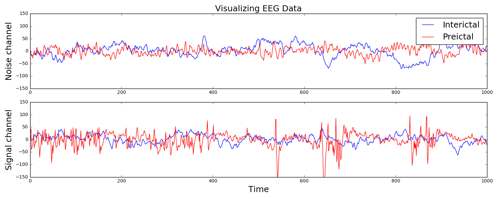
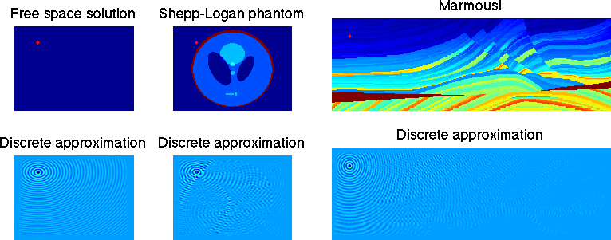
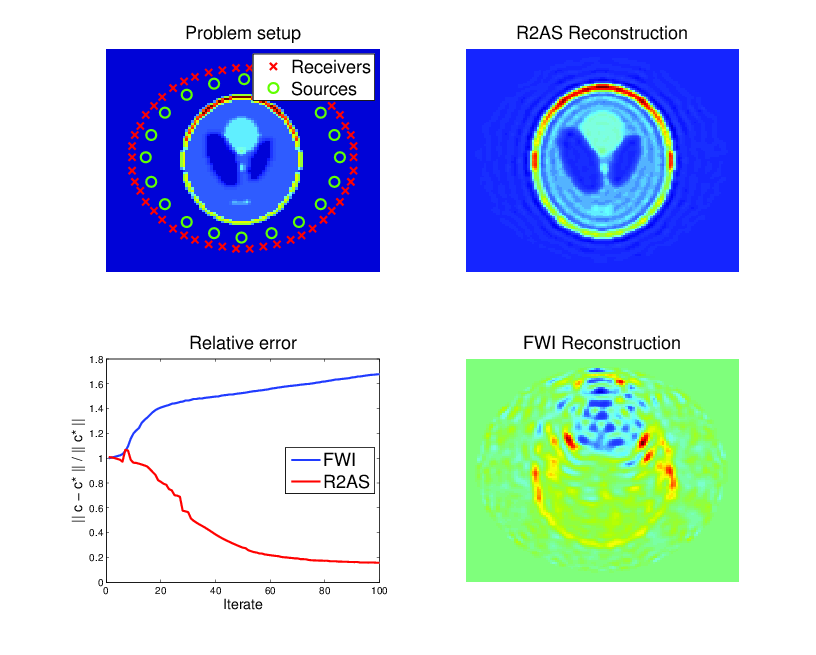

Welcome
Welcome to my personal website! My name is Stephen Shank, and I am currently a postdoctoral fellow in the Department of Biology at Temple University. I received my doctorate in mathematics from Temple University, studying applied mathematics and scientific computing.
This website is currently (perpetually?) under construction, so please be sure to check back later for further updates!
Background
I studied mathematics for both my undergraduate and graduate degrees at Temple University. My thesis work was in numerical linear algebra, a field that is foundational for machine learning. While a graduate student, I interned at Sandia National Laboratories. My first postdoctoral experience was at MIT, working on mathematical problems in geophysics and seismic imaging. My current postdoctoral experience is in computational biology. I work in phylogenetics, specifically in protein evolution. I build models of how proteins evolve, with the goal of detecting selective pressures on different sites. This involves a lot of mathematical modeling, and crunching a lot of genomic data.
In my spare time, I contribute to Project Cognoma, an effort of the civic technologists at Data Philly to put machine learning in the hands of cancer biologists. I also enjoy web development as a hobby, having had a startup with a product that was used in the packaging industry. My contribution to this product was a web application that accepted a spreadsheet of inventory that was later checked against existing inventory via an iPhone.
I love all things science and technology, so if you do as well, please feel free to reach out. In my spare time I enjoy playing music (mostly guitar, some piano) and reading nonfiction.
Computational biology
My current postdoctoral work is in computational biology. Specifically, I work in the field of phylogenetics on classes of models that are inspired by population genetics. In machine learning parlance, I devise unsupervised learning algorithms to detect the effects of evolutionary forces on genes and genomes.
Population genetics
Population genetics is a beautiful field of biology that draws heavily on mathematics. Evolutionary forces like mutation, selection, and drift are modelled mathematically, with new mutations being assigned fitness values that reflect the probability of such a mutation contributing genetic material to the next generation. Deleterious mutation are assigned small fitnesses and are likely to be purged from the population, while advantageous mutations have large fitnesses and are likely to fix. Below is a snapshot from a simulation of the classic Wright-Fisher process, a stochastic model of these evolutionary forces in a population.
The Wright-Fisher model in population genetics. Alleles are assigned "fitnesses" \( f \) and make up some proportion of the population, termed the "frequency" of different mutant alleles within a population. When assigning alleles to the next generation, allele \( i \) is chosen with probability $$ p_i = \frac{f_i}{\sum_j f_j}, $$ and a new population is chosen via sampling with replacement. The image depicts a scenario with a wild-type allele with fitnesses \( f_\text{grey} \), which makes up the bulk of the population. Two competing alleles, colored red and blue, are segregating in the population. While \( f_\text{red} > f_\text{blue} > f_\text{grey} \), initially the frequency of the red allele is much larger than the blue one, and it has a chance of being lost due to randomness of mating, i.e., evolutionary drift. In this scenario, the strength of selection was so strong that the blue allele eventually overtakes the red allele, and will eventually fix in the population.
Phylogenetics
Phylogenetics concerns evolutionary relationships among species and genes. A phylogenetic tree can built, which provides a hypothesis of common ancestry, and selective pressures can be assessed over the phylogeny by combining phylogenetic models with the population genetic models described above. Specifically, codons in a protein-coding sequence of a gene can be modeled as continuous-time Markov chains via $$ P(C_{t+\Delta t} = J | C_t = I ) = \delta_{IJ} + q_{IJ} \Delta t + o(\Delta t) \mbox{ and } q_{IJ} = \mu_{IJ} \frac{p(N, s_{IJ})}{p(N, 0)}. $$ Here \( t \) denotes time, \( \mu_{IJ} \) comes from a nucleotide level mutation model, \( s_{IJ} \) is the selection coefficient, a function of the fitnesses of each codon, \( N \) is the effective population size, and \( p \) is Kimura's probability of fixation in the Wright-Fisher process. Existing models assume selection strength is constant over a tree, and misspecify episodes of natural selection that shift compositions as depicted below.
Here data is simulated under a model that has changing selection coefficients in time, but inferred with a model that assumes these forces were constants. This results in an averaging affect. Less fit codons are inferred to be more fit, and conversely. As a result, one infers neutrality, missing a positive adaptive episode occurring.
Protein evolution
Ultimately, the goal is to estimate selection pressures on proteins. The framework described above permits a way quantify how deleterious certain mutations are. For future work, I would like to visualize mutations in this framework, with the goal of detecting mutations that disrupt protein function. For instance, a pair of mutations could result in a steric clash that prevents a protein from folding and breaks its function within a cell. This could be done using the Javascript protein viewer, depicted below.
The Adaptive Evolution Database's protein viewer. Here a pipeline is ran to detect selective pressures on different sites of a protein. Genes were then searched against all existing Protein Data Bank structures and aligned against them, and changes were mapped onto this structure for visualization. Long term, I hope to contribute similar visualizations to Project Cognoma, as well as provide more advanced evolutionary visualizations using the models described above to infer selective pressures. The model used here, the widely adopted \( \frac{dN}{dS} \) ratio, has many issues when trying to untangle positive and negative selective effects.
Machine learning and data science
I am very intrigued by machine learning and it's transformative potential. My graduate work in numerical linear algebra provided a good foundation for the custom implementation of machine learning algorithms, while my postdoctoral work provided context for how they are used to make biological inference. I'm also a member of Project Cognoma, which uses machine learning to predict mutations in cancerous cells from the gene expression data. Finally, I've played around with my fair share of Kaggle data, and every so often I make a submission.
EEG time series classification
I participated in a Kaggle competition. The task was to forecast seizures in epileptic dogs from measurements of electrical activity within their brains, depicted above. Waveforms were labeled as either preictal, meaning that the dog had a seizure within the next hour of the current measurement, or interictal, meaning that it did not. For clarity, one can provide ictal and postictal measurements, meaning during or directly after a seizure, but they are not useful for forecasting. The task was, given all these labeled data, can one learn features of the waveforms that are indicative of the onset of a seizure?
The answer is indeed yes, and I am constantly amazed that as a layperson with no training in neuroscience, this task can be done in a few dozens lines of Python code that is freely available to the world. The key is to extract features that a machine learning classifier can be trained on to make predictions. Looking at the above examples, we see that some of the preictal waveforms display more severe oscillations with higher frequency. This suggests using the discrete Fourier transform, a mathematical tool that quantifies oscillations, as a means of extracting useful information from this data. Taking the DFT and binning up the resulting absolute values results in a nice clustering, shown to the right. It is this straightforward to train a classifier on this data. Essentially, extract these features from a sample you wish to label, and if it is near the red dots, label it as preictal, while if it is near the blue dots, label it as interictal. This actually did a suprisingly good job, resulting in the top quintile of submissions.
Project Cognoma
I have also been involved in Project Cognoma, whose mission is to put machine learning in the hands of cancer biologists. Project Cognoma is a group of civic technologists, devising a machine learning pipeline to predict mutations in cancerious cells from their gene expression, and make this available to a cancer biologist via a user friendly web application. While my efforts for this project have mostly been towards data engineering and backend web development, I have some lingering pull requests and unpublished work on predicting mutated pathways that I hope to put up here soon... so stay tuned!
Waves and Imaging
For my graduate studies, I worked in an area known as scientific computing, specifically numerical linear algebra. I was concerned with numerically solving the sorts of equations that arose from models of physical phenomena. Mathematically, these models are written down as partial differential equations. When discretized, these resulted in large systems of equations which require specialized techniques to solve. Applications typically used these models as constraints in an optimization problem.
Partial differential equations
Waves in the frequency domain are modeled by the Helmholtz equation $$ -\Delta u - \omega^2 \frac{u}{c^2} = f.$$ Here \( f \) is a source that excites a wave at frequency \( \omega \). For instance, this could be something that emits sound in acoustics, or a perturbation of the earth's subsurface via dynamite in geophysics. These evoke a response wave \( u \) which travels through a medium (air, the earth) with speed \( c \). These are depicted in three different cases below... free space (i.e., with constant speed), the Shepp-Logan phantom (a benchmark in medical imaging) and the Marmousi model (a benchmark in geophysics). Given \( f \) and \( c \), solving for \( u \) in three dimensions is a notoriously difficult problem in scientific computing.
Source inversion
In applications one is typically not concerned with merely modeling waves for their own sake, but to serve some purpose. The first such application considered here is source inversion. Instead of having a known source \( f \), one simultaneously solves for a source that produces a desired wave \( \hat{u} \) in some subregion of the computational domain. Waves may be focused, propagating in specific directions with prescribed intensity. This has applications in weapons engineering.
PDE-constrained optimization of the Helmholtz equation (source inversion): determine \( u \) and \( f \) from the following constrained optimization problem: $$ \begin{align} \min_{u,f} \frac{1}{2}\| u - \hat{u} \|_{L_2(\Omega_\text{ROI})}^2 & + \frac{\beta}{2} \| f \|_{L_2(\Omega)}^2 \\ \mbox{ such that } -\Delta u - \omega^2 u & = f \mbox{ in } \Omega, \\ \frac{\partial u}{\partial \eta} - i \omega u & = 0 \mbox{ on } \partial \Omega, \\ \mbox{supp}(f) & \subset \Omega_\text{CAA}. \end{align} $$ Here \( \hat{u} \) is some desired state that we seek to create in a region of interest \( \Omega_\text{ROI} \), while only allowing our control \( f \) to be nonzero in a control allowable area \( \Omega_\text{CAA} \). Above, our desired state is a plane wave propagating away from the domain. The objective function tries to drive the produced wave as close as possible to the desired wave, subject to the Helmholtz equation as a constraint to ensure that waves are being physically modelled.
Material inversion
In other applications, the material which dictates the speed of sound is not known either. However, data may be available from waves that have scatterred off of this material and were measured elsewhere. One sets up a similar optimization problem, except with the sound speed \( c \) now being unknown, and chosen to provide the best possible fit to the measured data. This forms the basis of many imaging techniques, particularly full-waveform inversion in seismic imaging. The resulting optimization problem is non-convex, and notoriously difficult.
PDE-constrained optimization of the Helmholtz equation (material inversion): determine \( c \) and \( u_{ij} \) from the following constrained optimization problem: $$ \begin{align} \min_{c, u_{ij}} \frac{1}{2} \sum_{i,j,k} | u_{ij}(x_k) & - d_{ijk} |^2 \\ \mbox{ such that } -\Delta u_{ij} - \frac{\omega_i^2}{c^2} u_{ij} & = f_j \mbox{ in } \Omega, \end{align} $$ where \( i,j \) and \( k \) run over the number of frequencies, sources, and receivers, respectively, and \( d_{ijk} \) represents data at receiver locations. Here \( c \) is the local speed of a wave which results from an unknown material which is to be imaged. The material is surrounded by sources that excite waves and receivers that measure the response after being scattered (upper-left). Classic techniques suffer from non-convexity of the objective and get trapped in local minima (lower-right), while a technique known as lifting recovers the true solution for a wider range of parameters (upper-right). Though both methods reduce the objective function, classic methods can actually increase error as iterations proceed (lower-left).